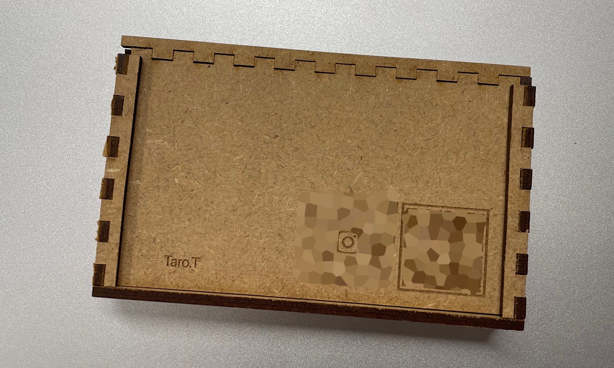
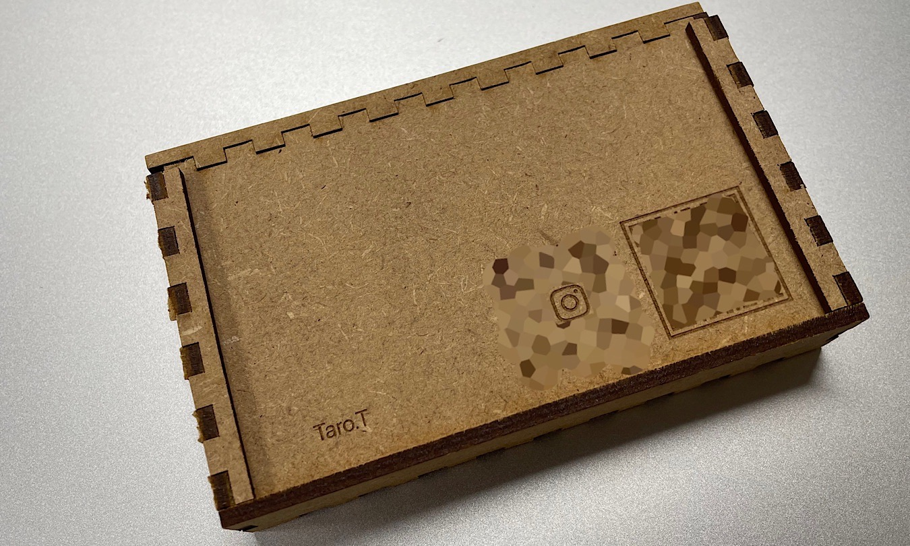
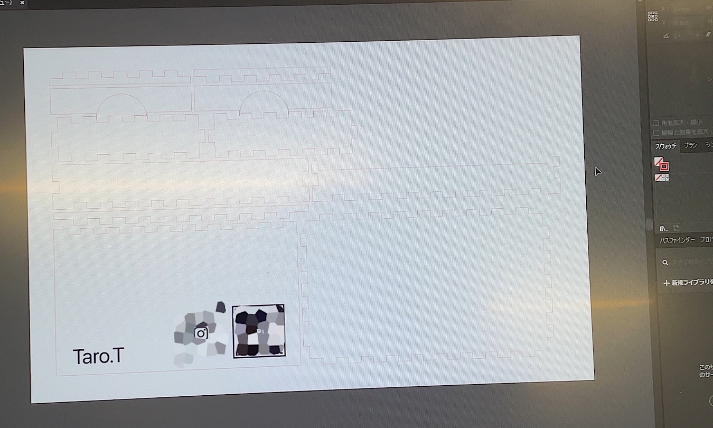
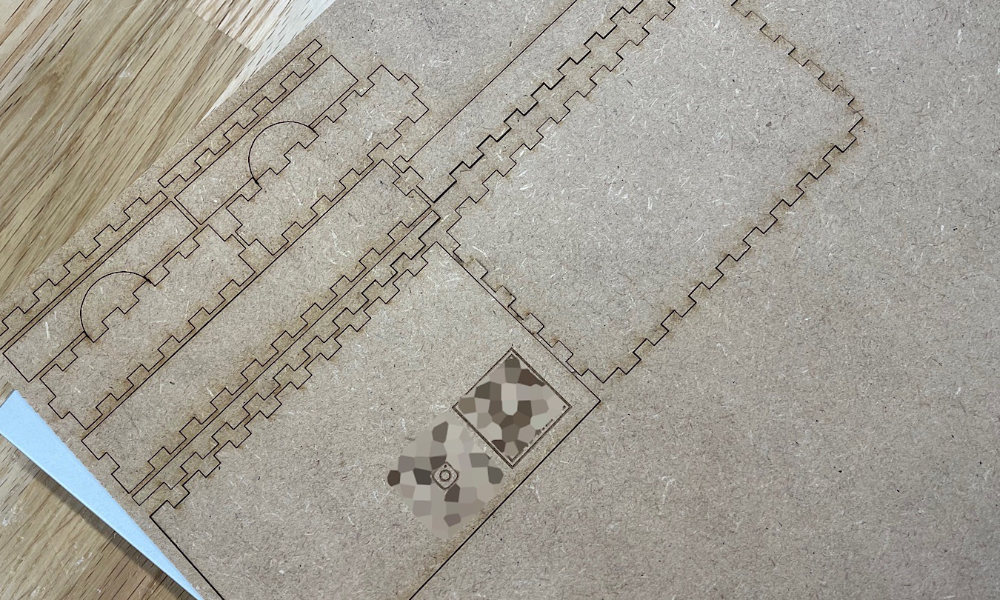
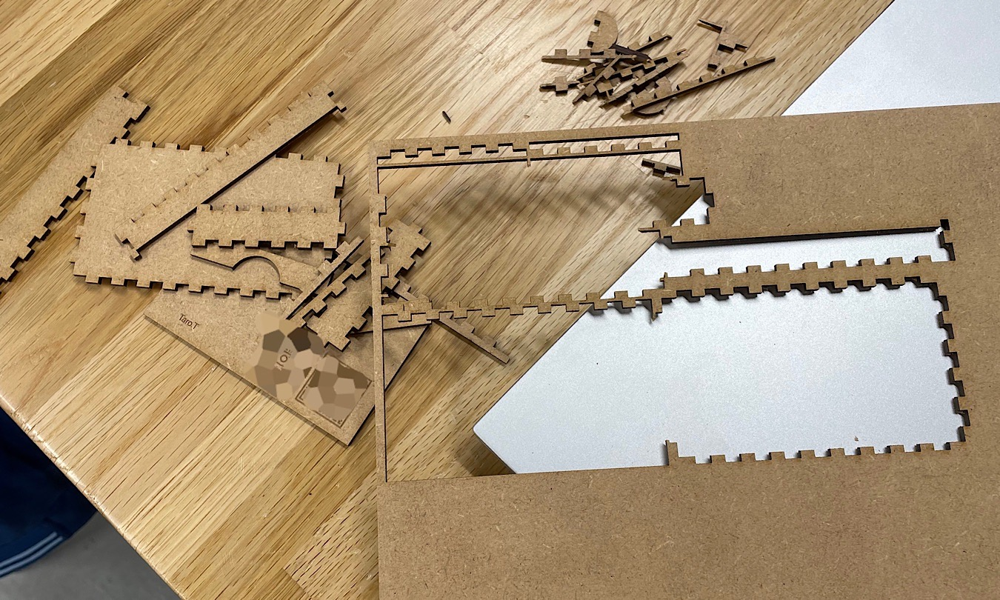

ホーム
デジタルファブリケーション
レーザーカッティング
作品名：名刺ケース
＜設計図＞

＜完成作品＞

（個人情報保護のため、画像のQRコード部分は加工しています。）
＜作品の説明＞
今回は、レーザーカッティングで名刺ケースを作成しました。
蓋をスライドして取り出せ、蓋にはそのままスマートフォンのカメラで読み取れる、LINEとInstagramのQRコードをレーザーで彫刻しました。
心を動かすポイントとして、QRコードを読み取れるという「便利」と、木でできた名刺ケースという「かっこいい」の2つの感情を呼び起こす作品です。
＜なぜこの作品を作ろうと思ったか＞
名刺ケースは持っておらず、以前から欲しいと思っていました。
しかしながら、なかなかピンとくる名刺ケースは見つからず、今回の課題で自分の心が動く名刺ケースを作成しようと考えました。
＜制作プロセス＞



